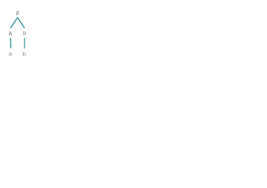
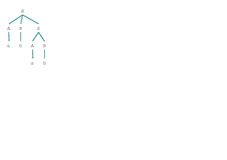
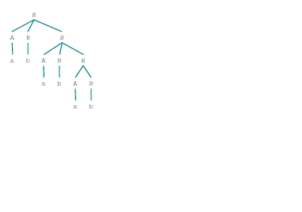

Grammar with 4 productions (start state = S)
S -> A B
S -> A B S
A -> 'a'
B -> 'b'
Depth = 1
Depth = 2
Depth = 3
a b
(S (A a) (B b))

Depth = 4
a b a b
(S (A a) (B b) (S (A a) (B b)))

Depth = 5
a b a b a b
(S (A a) (B b) (S (A a) (B b) (S (A a) (B b))))
